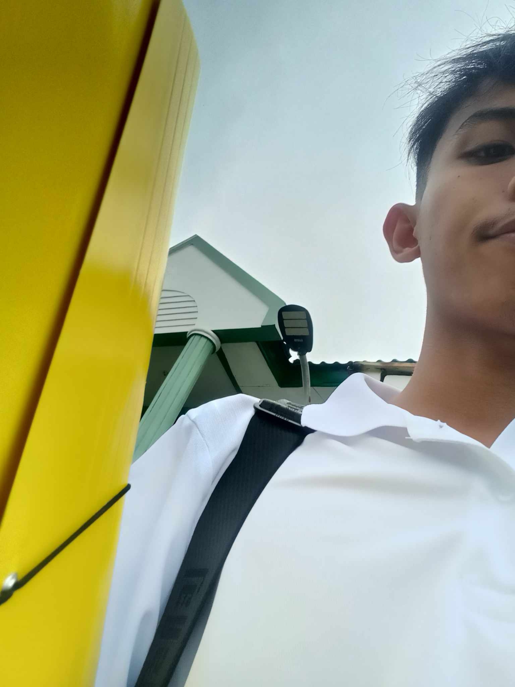
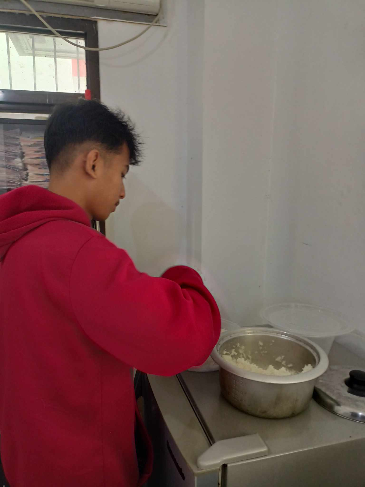
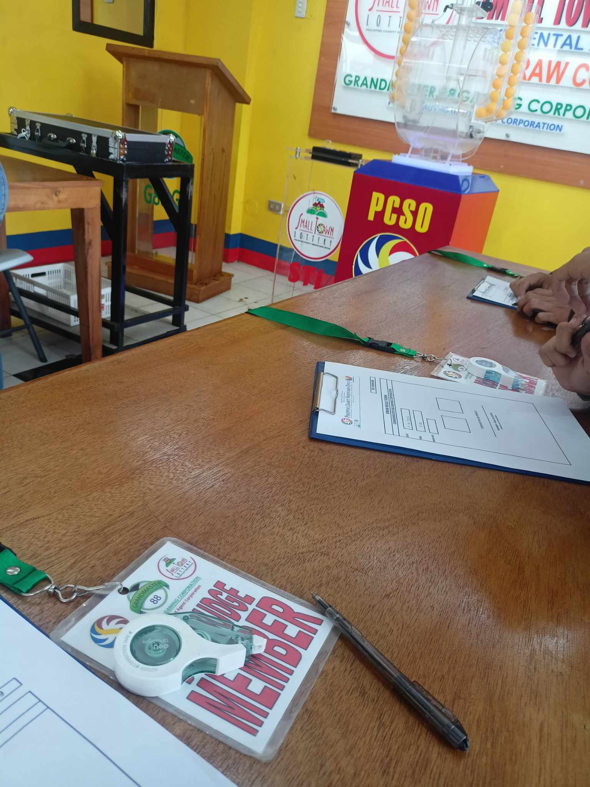
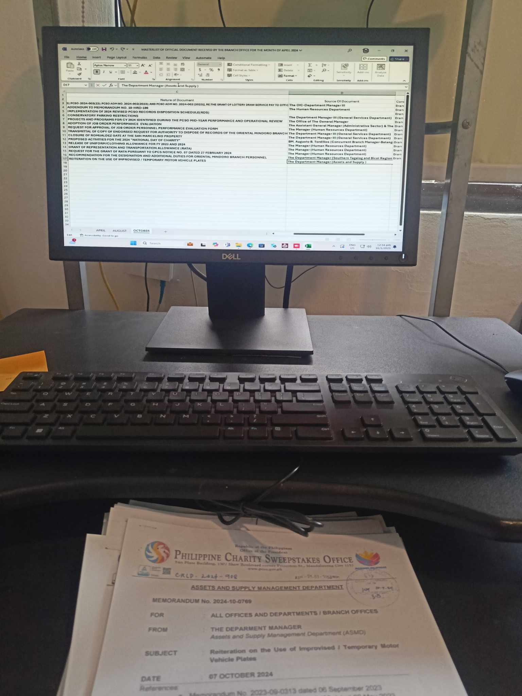
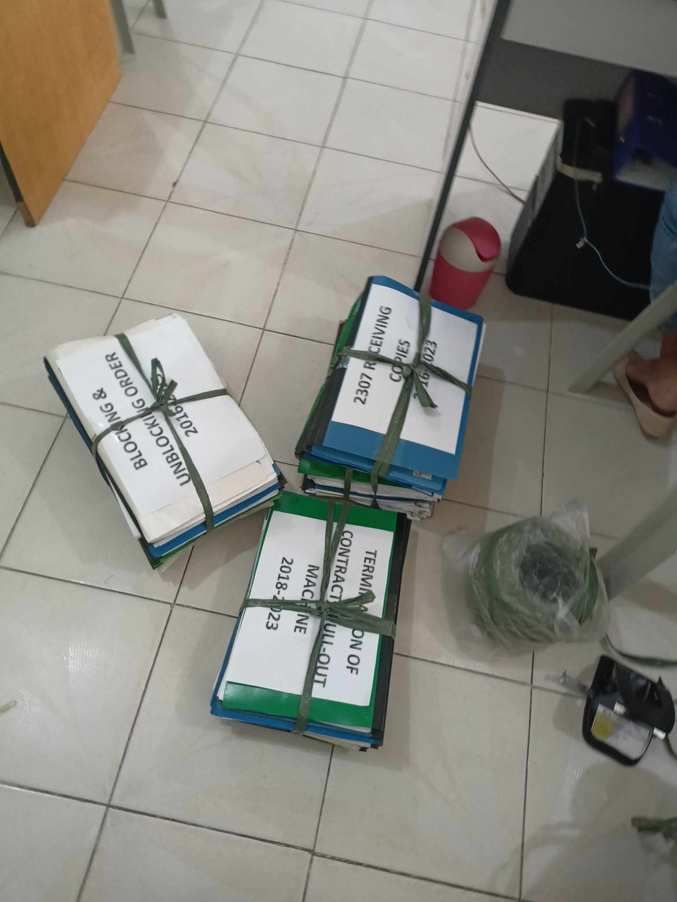

Week One Experience
    Our first week of immersion was a valuable learning experience that introduced us to the professional environment and essential workplace skills. On the first day, we learned the importance of patience and following proper processes in a professional setting. The second day involved submitting documents to our boss and familiarizing ourselves with our assigned building, giving us insight into workplace organization. On the third day, observing the STL (Small Town Lottery) process allowed us to understand the significance of fairness and transparency in lottery operations. The fourth day marked our first assigned task—encoding data into Excel—which helped improve our attention to detail and accuracy. Finally, on the last day of our first week, we assisted Ma’am Mitch in organizing files, highlighting the importance of maintaining a well-structured and efficient office environment. Each task, no matter how simple, played a role in developing our skills and preparing us for real-world work experiences.